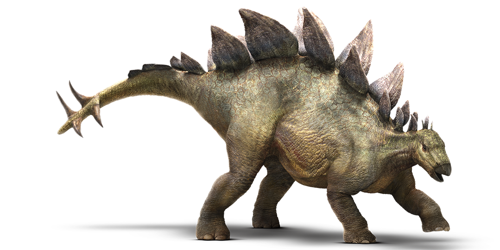

Динозавры
-
Тираннозавр

Один из самых крупных хищников на все времена. Ходил на двух ногах с двумя когтистыми пальцами на каждой, имел большой череп и длинный тяжелый хвост, зубы размером с бананы.
Некоторые ученые считают, что тираннозавр не мог бегать и был неповоротливым, поэтому не охотился, а питался только мертвыми животными. Однако более распространенная точка зрения в том, что эти динозавры были и хищниками, и падальщиками, по возможности отнимали добычу у других. Тираннозавр был способен съесть до 150 килограммов мяса за один присест, но потом несколько дней голодать.
Скелет самого большого тираннозавра нашли в 1991 году в провинции Канады. Длина скелета достигала 13 метров, вес — почти 9 тонн.
-
Стегозавр
Отличительная черта — костяные пластины и шипы на спине и хвосте (для защиты от нападений). Эти динозавры ходили на четырех лапах. Питались только нежными листьями, потому что имели плохо развитые челюсти. Зубы стегозавра почти не годились для пережевывания. Чтобы усвоить даже нежную растительную пищу, стегозавр был вынужден глотать камни — они перетирали растения в его желудке.
Стегозавр достигал 9 метров в длину и весил до 9 тонн — примерно как слон. Впервые кости этих динозавров нашли в США в 1877 году.
-
Трицератопс
Отличительный признак — три рога (один на кончике носа, два — над глазами), костяные «воротники» на голове и клюв на морде. «Воротники» служили для защиты головы и плеч, рогами самцы отпугивали врагов и дрались, в том числе за самок в брачный сезон, а клювом обрывали ветки кустарников и папоротников.
Внешне трицератопсы похожи на носорогов, только более крупных — до 3 метров в высоту и 9 в длину, средним весом около 12 тонн. Только голова достигала в длину 2 метров. Во рту у этих динозавров было несколько сотен зубов.
Питались растениями, передвигались на четырех толстых лапах, жили маленькими группами.
Трицератопсы — одни из последних на Земле динозавров. А их кости впервые нашли в США в 1899 году.